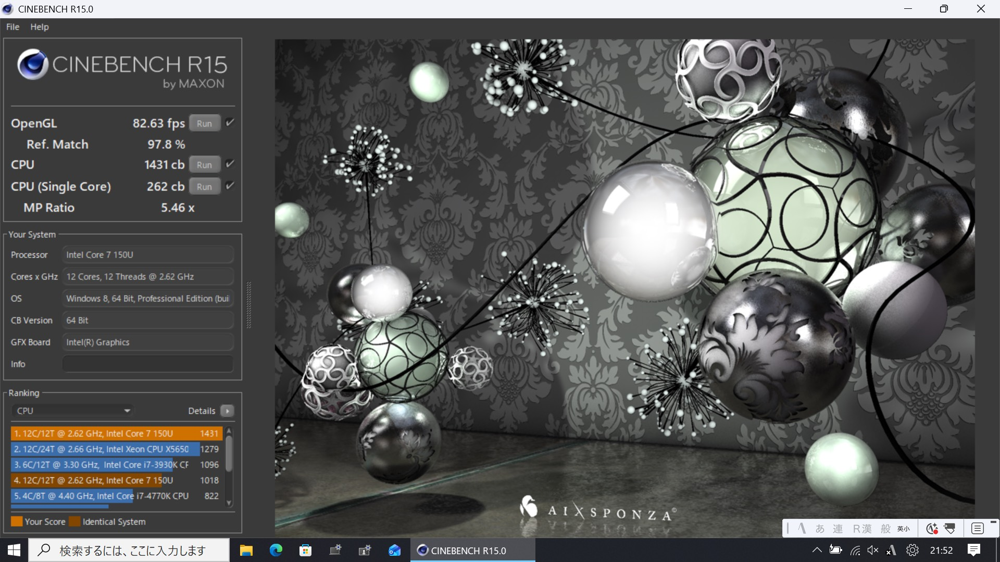

ということで新VAIOのベンチマーク測定をしていきます．
使うソフトは古く良き2つ，Cinebench R15とCrystal Disk Markです．
前者に関しては「今更Cinebench R15かよ」と突っ込まれそうですが，R15しか使ってこなかったので，またR15が1番使われてきたのでこれを使います．
負荷が程よいのでいつもこればっかり使っています．

こちらCinebenchです．
なんか普通にスコアは健闘していると思います．
マルチコアで1431 cbなので，普通に良いスコアです．
デスクトップCPUならIntel第10世代のIntel Core i5 10400くらいに相当します．
そしてシングルコアでも262 cb，えぇっと…これは旧VAIOのマルチコアのスコアくらいに相当します…
よく頑張ってきたもんです．
OpenGLの82.26 fpsも，内蔵GPU(iGPU)にしては相当に良いスコアだと思います．
なんてったってTDPが15 WのCPUですからね．
めちゃくちゃ快適です．

SSDの速度です．
シーケンシャルリード5005.20 MB/s，シーケンシャルライト3670.64 MB/sとかいう見たことのない数字を叩き出しています．
スコアが異次元すぎて，もはや排熱が間に合っているかの方が心配です．
そりゃぁ全てが快適ですよね．
(…まぁ，恐ろしく重い3DモデルをSTEP形式で書き出すと流石にフリーズしました．そりゃそうですよ，他のソフトも起動していたんですから)